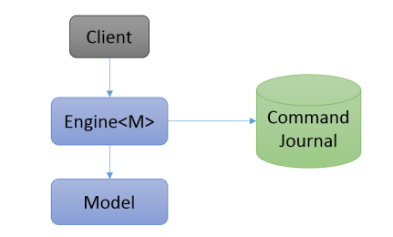

OrigoDB is an in-memory database toolkit. The core component is the Engine. The engine is 100% ACID,
runs in-process and hosts a user defined data model. The data model can be domain specific or
generic and is defined using plain old NET types. Persistence is based on snapshots and write-ahead
command logging to the underlying storage.

The Engine encapsulates an instance of the model and is responsible for atomicity, consistency, isolation and durability.
It performs the following tasks:
* writes commands to the journal
* executes commands and queries
* reads and writes snapshots
* restores the model on startup
Read more in the docs on Extensibility
Our initial design goals were focused on rapid development, testability, simplicity, correctness,
modularity, flexibility and extensibility. Performance was never a goal but running in-memory with
memory optimized data structures outperforms any disk oriented system. But of course a lot of optimization is possible.